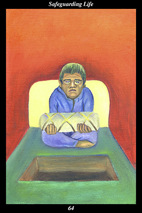

 | IMAGEA male warrior holds the funeral bundle of his child, preparing to place it in its burial site. His face reflects the shock, anguish, and horror that fills his heart.
|
INTERPRETATION
This hexagram depicts the inevitable result of carelessness and irreverence. The male warrior symbolizes the versatility and fortitude that are at the core of outer nurturing. That he prepares to place the funeral bundle of his child in its burial site means that strength cannot accomplish afterwards what nurturing can accomplish beforehand. That his face and heart are filled with shock, anguish, and horror means that he is in the grips of the most terrible truth: that which we most cherish cannot be replaced. Taken together, these symbols mean that you avoid causing suffering by honoring and nurturing all that your spirit touches.
ACTION
The masculine half of the spirit warrior draws back from the brink before it is too late. It is not a time for pursuing desires and ambitions: those who cannot temper their strength run the risk of losing a source of that strength. When our masculine half goes too far in pursuit of goals and becomes short-sighted and impatient, it is necessary to balance it with the strongest medicine possible: real problems can be avoided only by balancing the masculine half with the power of the feminine half’s protective love. It is the feminine half’s sense of caring and reverence that holds the key to fulfilling the real goal of happiness, companionship, and a clear conscience: those who do not hold the emotions of caring and reverence dear to their hearts run the risk of causing pain for themselves and others. Just because we can acquire something doesn’t mean we should, just because we can accomplish something doesn’t mean we have to: stopping to really consider what we are risking, allowing ourselves to feel the full brunt of such an emotional loss—this is the protective and loving nature of the feminine half’s medicine. Likewise, stubborn pursuit of goals even in the face of warning signs, longing for something that threatens to cause suffering for others, refusal to change course when it endangers the greater good—this is the short-sighted and zealous nature of the masculine half when it loses its balance and sense of proportion. Because you treat nature, other people, and your own creations with the care and reverence you would your own infant child, you counteract every self-defeating action before it ever arises in thought or feeling.
INTENT
The foolish ruin even that upon which they depend. When we recognize the sanctity of life, however, and work to protect it from unnecessary and pointless harm, then we safeguard our own spiritual foundation and that of all who touch our spirit. Consider what cannot be replaced and then cherish it, planting seeds of intent in the spirit realm to nurture it and keep it from being lost forever. Shun materialism and self-interest as you would a poisoned well: keep to the path of the balanced and harmonious way of life, revering all that the life-giving and life-sustaining forces themselves love. By maintaining an unbroken alliance with the helping spirits, the community of spirit warriors ensures that the hidden storehouse of life-giving power is never depleted: only in this way can human nature continue to draw upon the power to create its own, unforeseeable, future.
SUMMARY
If you lose sight of your dreams, you will lose what you have already won. If you become self-absorbed and self-indulgent, you will lose your way. Recognize the crossroads when you come to them: will you take the way of self-gratification and self-glorification or the way of balance and harmony? Profound success is yours if you can reverse the momentum before it is too late.
THE LINE CHANGES
1° Your predecessors have left the family home a mess—brothers, sisters, and cousins are all fighting for a bigger part of the inheritance. Clearing all this up is made harder by factions invested in perpetuating conflict. The utmost resolution and diplomacy will have to be applied for a long time.
2° The primal relationship between humans and nature has been disrupted by your predecessors’ short-sightedness. Look upon nature as you would your beloved and work to repair this rift. Begin by puncturing the bubble alienating you from the affection surrounding you.
3° Poverty, crime, and desperation are a way of life for many as the loss of meaningful employment takes its toll. Look deeper into the dehumanizing effect of technology and materialism. Participate actively in a long-range strategy to bring the collective mind and collective heart back into harmony.
4° It would be ideal if simply admitting the wrong-doing of your predecessors were enough to rectify their mistakes. But such is not the case—you still have much work ahead of you. Only by persevering in
benefiting those around you can the old order be overthrown from within.
5° You have made a good start but do not really have the stomach for some of the difficult decisions ahead. Find someone trustworthy to enact reforms. Focus on encouraging people to advance by reminding them of the positive accomplishments of their predecessors that will remain in place.
6° Seeing how corruption worms its way back in even as reforms are being implemented, you know the time has come to leave and take up the greater pursuits of life. Break your habit of looking for what needs reforming. Now is the time to look into the face of what is perfect in the world.